Assessment: Integumentary, HEENT & Neuro
Basics & Integumentary
- Purpose of physical assessmentObtain baseline data for the plan of care and detect changes in the client's condition
- Two types of physical assessmentComplete and focal (focused)
- Four assessment techniquesInspection, palpation, percussion, auscultation
- Assessment introductionsTwo client identifiers, introduce yourself and state your role, hand hygiene, privacy, explain the procedure
- First step on entering the roomIdentify the client and check for acute distress (skin color, respiratory effort, alertness); if in distress, do a focused assessment
- General surveyAlertness/orientation; skin color, respiratory effort, distress; height, weight, BMI, posture; facial expression; mobility aids; hygiene, grooming, dress, odors; mood/affect; vital signs
- Cultural considerations in the general surveyEye contact and facial expression vary by culture; obtain an interpreter for language barriers
- BMI categoriesUnder 18.5 underweight; 25 or greater overweight; 30 or greater obese
- Calculating BMI without a calculatorWeight (lb) × 703 ÷ height (in)²
- Stethoscope diaphragmHigh-pitched sounds (heart, lung, bowel); apply firm pressure with index and middle fingers
- Stethoscope bellLow-pitched sounds (murmurs, bruits, S3, S4); light pressure with the entire rim touching the skin
- Stethoscope earpieces and tubingEarpieces angled toward your nose; thick tubing no longer than 45 cm (18 in) transmits best; nothing should rub the tubing
- Penlight usesViewing body orifices and skin folds, checking pupils, tangential lighting of skin
- Tangential lightingLight shone across the skin at an angle to show surface contours and visible pulsations
- Measuring devicesClear ruler (mm/cm) for lesions, redness, pressure injuries, and incisions; tape measure for abdominal girth and leg edema
- Skin assessment techniquesInspection and palpation, done simultaneously; compare side to side
- Best lighting for skin assessmentNatural light (best for subtle color changes, especially in dark skin); fluorescent if natural light isn't available
- Why keep the room at a comfortable temperatureCold causes bluing of the lips and nail beds; heat causes a reddened undertone
- Tattoos during skin assessmentInspect and palpate them, since tattoos can mask rashes or color changes; skin cancer is more common where tattoos were removed
- Normal (WNL) skin documentationSkin is clean, dry, and intact without wounds or lesions
- Where to check undertone changes (cyanosis, jaundice)Palms, soles, mucous membranes
- CyanosisBlue; hypoxia or impaired venous return. In dark skin, look for gray (palms, soles, lips, nail beds, mucosa)
- JaundiceYellow-orange; liver dysfunction or RBC destruction (increased bilirubin). Check the sclera in light skin and the hard palate/oral mucosa in dark skin
- ErythemaRedness; inflammation, rash, fever, sun exposure, vasodilation, bleeding or bruising. In dark skin, palpate for warmth, firmness, and tenderness
- PallorLoss of color; anemia, shock, decreased blood flow. Dark skin appears gray; brown skin appears yellow-brown
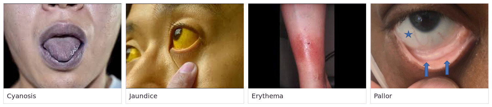
- Priority skin color findingCyanosis, because it indicates hypoxia (ABCs)
- Reliable sites for color change in dark skinPalms, soles, lips, tongue, nail beds
- Decreased pigment in an areaPossible vitiligo or skin cancer
- Bruising or injury on skin assessmentPossible indicator of abuse or neglect
- How to assess skin temperatureOnly with the dorsal (back) side of the hand; compare both sides
- Checking skin texture and moistureUse your fingertips (back of the hand is for temperature)
- Cool or cold skinPossible decreased blood flow
- Warm or hot skinPossible inflammation or infection
- Expected skin textureSmooth, soft, even, intact; thicker on palms and soles; older adults have drier, thinner skin
- Expected skin moistureMoist in axillae and skin folds, otherwise dry; check for diaphoresis, oiliness, or dry flaking
- DiaphoresisExcessive sweating
- Skin turgor techniquePinch a skin fold over the clavicle, sternum, or back of the hand; it should return within a few seconds
- TentingSkin fold stays raised for several seconds; indicates dehydration and increases the risk of skin breakdown
- Turgor in older adultsNot reliable, because decreased turgor can be an age-related change
- EdemaExcess fluid in tissues, most often in the lower extremities; skin looks shiny and tight; a fingerprint indentation means edema is present
- Checking pitting edemaPress at least 5 sec over a bony prominence (behind the medial malleolus, dorsum of the foot, shin); measure circumference and compare both sides
- Documenting edemaNote how far up the leg it extends; measure circumference to compare sides and track over time
- Bilateral edemaFluid volume excess or venous insufficiency
- Unilateral edemaInflammation, DVT, lymphedema
- Unilateral edema follow-upMeasure the affected limb and look for erythema and tenderness
- 1+ edemaTrace, 2 mm, rapid skin response
- 2+ edemaMild, 4 mm, 10–15 sec response
- 3+ edemaModerate, 6 mm, prolonged response
- 4+ edemaSevere, 8 mm, prolonged response
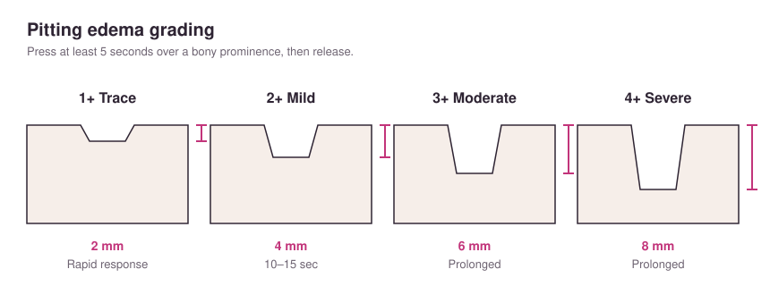
- Lesion and wound assessmentMeasure L × W × D (cm); note distribution, shape, size, color, texture, location, characteristics, exudate, odor, tenderness
- Primary lesionArises from healthy skin
- Secondary lesionResults from a change in a primary lesion
- MaculeFlat, nonpalpable color change under 1 cm (Ex: freckle, petechiae)
- PapulePalpable, solid, raised, under 1 cm (Ex: elevated nevus)
- NodulePalpable, deep, firm, 1–2 cm (Ex: wart)
- VesicleSerous fluid-filled, under 1 cm (Ex: blister, herpes simplex, varicella)
- PustulePus-filled, varies in size (Ex: acne)
- TumorSolid, deep mass larger than 1–2 cm (Ex: epithelioma)
- WhealPalpable, irregular borders, edematous (Ex: insect bite)
- AtrophyThin, shiny, translucent skin with loss of normal furrows (Ex: arterial insufficiency)
- ErosionLost epidermis, moist, no bleeding (Ex: ruptured vesicle)
- CrustDried blood, serum, or pus (Ex: scab)
- ScaleFlakes of skin that exfoliate (Ex: dandruff, psoriasis, eczema)
- FissureLinear crack (Ex: tinea pedis)
- UlcerLoss of epidermis and dermis, possible bleeding and scarring (Ex: venous stasis ulcer, pressure injury)
- ABCDE of skin lesionsAsymmetry, Border irregularity, Color variation, Diameter over 6 mm, Evolving
- Melanoma in clients of African descentMore common under the nails and on the palms and soles
- Common skin lesions: adultsContact dermatitis, tinea pedis, psoriasis, labial herpes simplex (cold sores)
- Common skin lesions: older adultsLentigines (liver spots), seborrheic keratosis, dermatosis papulosa nigra, acrochordons (skin tags), sebaceous hyperplasia
- Expected nail findingsSymmetric nail beds, uniform color, firm base, nail angle about 160°
- Abnormal nail findingsDiscoloration, curvature over 160°, clubbing
- ClubbingNail angle over 160°; chronic low oxygen saturation from heart or lung disease
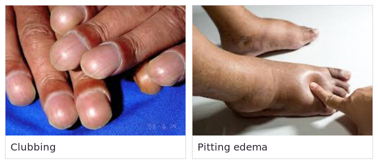
- Fungal nail infectionThickening, yellowing, ragged edges
- Expected hair findingsEven distribution, symmetric growth or loss; check for dry patches and infestations; postmenopausal clients may have patchy or generalized thinning
- AlopeciaHair loss; endocrine disorders, poor nutrition
- HirsutismHair growth on the face, shoulders, or chest in females; endocrine disorders, aging
- Pubic hair patternDiamond shape in males, inverted triangle in females
- Client wearing a wig or head coveringAsk them to remove it to examine the scalp
- Clients on bed restCheck skin over the elbows, coccyx, hips, and heels for erythema, open areas, or softening
- Clients in wheelchairsRisk of breakdown over the ischial tuberosities (lower buttocks)
- Nonblanchable erythemaRedness that doesn't blanch when pressed; skin is damaged by pressure
- Pressure injury risk toolBraden scale
- Integumentary aging changesThin, dry, fragile skin; loss of elasticity; wrinkles; thinning hair; thick, slow-growing nails; less oil and sweat; uneven pigmentation; slow healing; less fat over bony prominences; more vitiligo
HEENT
- HEENT techniquesInspection and palpation (auscultation for thyroid and carotid bruits)
- Expected skull and faceNormocephalic, symmetric, no deformities, masses, or tenderness; voluntary movements only; proportionate features
- Ear placementTop of the ears level with the eyes
- Facial symmetry landmarksPalpebral fissures (eye openings) and nasolabial folds
- Facial asymmetryNote whether all features on one side are affected or only some
- Expected neckSymmetric muscles, shoulders equal in height, smooth ROM (chin to chest, ear to shoulder, chin up)
- Lymph node palpationPads of index and middle fingers in a circular motion; compare sides; nodes are usually not palpable, tender, or visible
- Occipital nodesBase of the skull
- Postauricular nodesOver the mastoid
- Preauricular nodesIn front of the ear
- Tonsillar nodesAngle of the mandible
- Submandibular nodesAlong the base of the mandible
- Submental nodesMidline under the chin
- Anterior cervical nodesAlong the sternocleidomastoid
- Posterior cervical nodesBehind the sternocleidomastoid
- Supraclavicular nodesAbove the clavicles
- Additional lymph nodes palpatedDeep cervical and infraclavicular
- Enlarged lymph node assessmentLocation, tenderness, size, shape, consistency, mobility, warmth
- Thyroid glandTwo lobes in front of the trachea, lower neck, fixed to the trachea; not visible at average size
- Thyroid examInspect with neck hyperextended; have the client sip water (thyroid moves up with the trachea); palpate both sides for size, masses, smoothness
- Thyroid bruitAuscultate an enlarged thyroid with the bell; a bruit means increased blood flow, possibly hyperthyroidism
- TracheaShould be midline above the suprasternal notch; masses or lung problems cause shifting
- Finding the trachea's positionPalpate the groove between the trachea and the sternocleidomastoid on each side
- Eye exam sequenceVisual acuity → EOMs → visual fields → external structures → internal structures
- Snellen chartDistance vision (myopia); client stands 20 ft away; test uncorrected vision first, then with correction; each eye, then both; use the E or picture chart for clients who can't read
- 20/30 visionClient sees at 20 ft what an unimpaired eye sees at 30 ft
- Rosenbaum chartNear vision (presbyopia); hold 14 in (35.5 cm) from the face
- Near vision without a chartHave the client read newspaper print; if unable to read, have them count fingers
- Ishihara testColor vision
- Corneal light reflexLight reflection should be symmetric on both corneas
- Cover/uncover testScreens for strabismus; both eyes should gaze in the same direction
- Six cardinal positions of gazeClient follows your finger through a wide "H" without moving their head; expect full, smooth movement; a few beats of nystagmus in far lateral gaze is expected, but more is abnormal
- NystagmusJerky, tremor-like eye movements
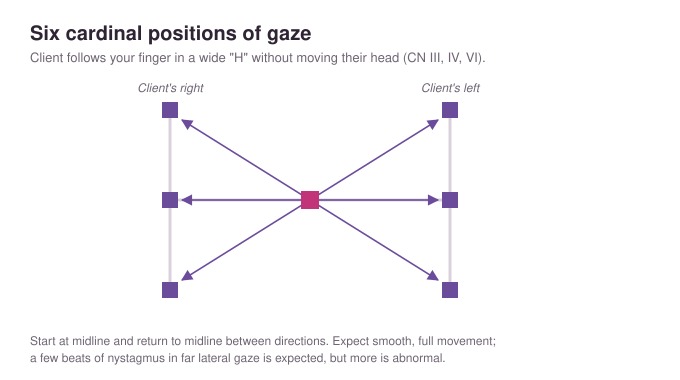
- Visual fields testFace the client 2 ft away; each covers the opposite eye; bring fingers in from 4 directions; client should see them at the same time as the nurse
- ExophthalmosBulging eyes
- StrabismusCrossed eyes
- PtosisUpper eyelid covering the pupil
- Expected upper eyelid positionLid covers 1–2 mm of the iris; no sclera visible above the iris
- Expected external eyeParallel eyes, symmetric brows, lids close completely, lashes curve outward, no redness or edema
- ConjunctivaPalpebral is pink; bulbar is transparent
- ScleraWhite in fair skin; light yellow with possible brown macules in dark skin
- Cornea and lensClear, shiny, smooth; a cloudy lens means cataracts
- Partially illuminated irisGlaucoma
- PERRLAPupils Equal (3–7 mm), Round, Reactive to Light (direct and consensual), Accommodation
- Direct vs. consensual pupil responseDirect: the lit pupil constricts. Consensual: the opposite pupil also constricts
- AccommodationPupils dilate for far objects, then converge and constrict for near objects
- Red reflexOphthalmoscope about 1 ft away, light on the pupil; fundus should look red; absent or asymmetric red reflex is unexpected
- Ophthalmoscope examDarken the room; start at 0 diopter; use your right eye for the client's right eye; follow the red reflex from 25–30 cm to 2–3 cm
- Expected internal eyeOptic disc light pink or yellow; retina without lesions; artery-to-vein ratio 2:3 with no nicking
- Lacrimal palpationExpect no tenderness and no discharge
- Abnormal eye findingsLoss of visual fields, asymmetric light reflex, periorbital edema, drainage, conjunctivitis, corneal abrasion
- Arcus senilisThin gray-white ring around the cornea in older adults
- Eye aging changesPresbyopia, decreased acuity and peripheral vision, glare intolerance, trouble distinguishing colors, slower pupil reaction, yellowing lens, arcus senilis, loss of lateral eyebrows, cataracts
- Expected external earTop of the ear aligns with the outer canthus of the eye; skin matches the face; no lesions, tenderness, or malodorous discharge; small amount of cerumen
- Ear tenderness checkPalpate the pinna and tragus, percuss the mastoid
- Otoscope exam: adultPull the auricle up and back; insert the speculum slightly down and forward 1–1.5 cm without touching the canal
- Adult otoscope speculum4 mm; attach and twist firmly; discard after the exam
- Tympanic membranePearly gray, intact, taut; cone-shaped light reflex; umbo and manubrium visible
- Cone of light location5 o'clock in the right ear, 7 o'clock in the left
- CerumenMoist and light brown to gray, or dry with Asian or Native American heritage; should not be in excess
- Cerumen color rangeMoist tan to flaky dark yellow or brown
- Otitis externaSwimmer's ear; manipulating the external ear is painful
- Middle ear infectionRed, bulging tympanic membrane; cone of light obliterated
- Whisper testOcclude one ear and whisper; client should hear from 1–2 ft away without seeing your mouth (CN VIII)
- Other bedside hearing checksRubbing fingers together near the ear, or a ticking watch
- Before documenting impaired hearingCheck the ear canal with an otoscope, since cerumen impaction is a common cause (especially in older adults)
- Rinne testTuning fork on the mastoid (bone conduction), then in front of the ear canal (air conduction); expect AC > BC (2:1)
- Weber testTuning fork on top of the head; expect sound equal in both ears (negative Weber)
- Weber with hearing lossConductive loss: heard best in the impaired ear. Sensorineural loss: heard best in the unaffected ear
- PresbycusisAge-related loss of high-frequency hearing
- Ear aging changesHearing loss, cerumen buildup, thickened tympanic membrane
- Expected noseMidline, symmetric; septum midline; nares patent; mucosa light red (redder than oral mucosa) and moist; no discharge
- Checking nare patencyOcclude one naris at a time and have the client sniff
- Flaring nares on inspirationBreathing difficulty
- Abnormal nose findingsPallor, inflammation, discharge or drainage
- Nasal discharge documentationThin and clear, thick and purulent, or bloody
- Internal nose examClient tips head back; insert the nasal speculum just barely into each naris
- Sinus palpationFrontal (just below the eyebrows) and maxillary (from the sides of the nose to the corners of the mouth); expect no tenderness
- Sinus tendernessPossible congestion or inflammation
- Expected lipsDarker than the face, moist, symmetric, smooth; pink to plum depending on skin tone
- Expected gumsTight against the teeth, pink, no bleeding; dark skin may have bluish or brown patches
- Inspecting the gumsRemove dentures or partials to see all surfaces
- Expected oral mucosaPink and moist; freckled pigmentation in dark skin; hyperpigmentation after age 50
- Best place to see pallor, cyanosis, or jaundice in dark skinOral mucosa
- Tongue examHold the tip with gauze; top is pink with papillae; underside smooth with a symmetric vascular pattern; midline
- Expected teethShiny, white, smooth; have the client clench to check malocclusion; yellowing is common in older adults
- Palate and uvulaHard palate whitish and concave; soft palate light pink; both the soft palate and the midline uvula move with vocalization
- Tonsils +1Barely visible (behind the pillars)
- Tonsils +2Halfway to the uvula
- Tonsils +3Touching the uvula
- Tonsils +4Touching each other
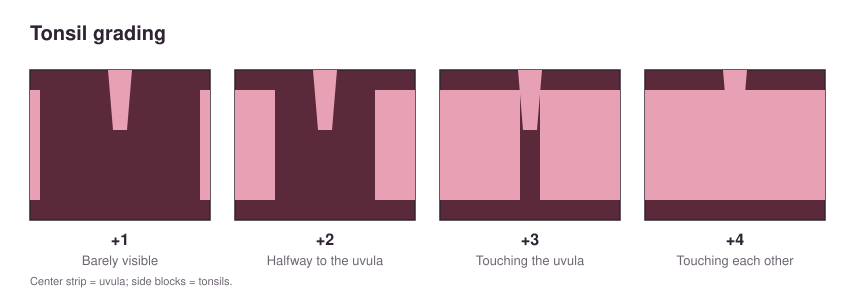
- Abnormal mouth findingsPallor, jaundice, cyanosis; missing teeth; caries; abnormal speech; dry, cracked lips; lesions
- Ears, nose, mouth, and throat equipmentOtoscope, watch, tuning fork, nasal speculum, tongue blade, penlight, gauze square, cotton-tipped applicators
- Mouth, nose, and voice aging changesDecreased taste and smell, tooth loss, pale gums, gum disease, darker teeth, less saliva; voice pitch rises
Cranial Nerves
- Cranial nerve basicsNumbered I–XII; can be sensory, motor, or both; located in the brain but affect various body parts
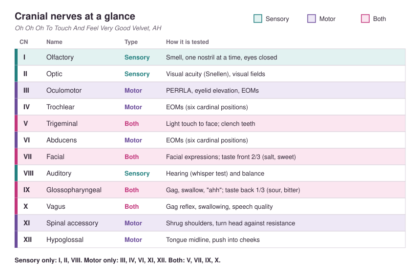
- CN I: OlfactorySensory (smell); client closes eyes, occludes one nostril, and identifies a familiar scent (mint, coffee, toothpaste); repeat on the other side
- Why not use alcohol to test smellNoxious odors stimulate CN V (trigeminal) and cause a misleading response
- CN II: OpticSensory; visual acuity (Snellen) and visual fields
- CN III: OculomotorMotor; extraocular movements and pupil reaction (PERRLA)
- CN III functionsPupil constriction and dilation, upper eyelid elevation, eye movement
- CN IV: TrochlearMotor; extraocular movements
- CN VI: AbducensMotor; extraocular movements
- Test for CN III, IV, VISix cardinal positions of gaze
- CN V: TrigeminalBoth. Sensory: light touch on the face with cotton (eyes closed). Motor: clench teeth while palpating the jaw muscles and TMJ
- CN V branchesThree branches covering the forehead, cheeks, and chin
- CN V motor testClench and release the jaw while palpating the temporal and masseter muscles; bite on a tongue blade
- CN VII: FacialBoth. Motor: smile, frown, puff cheeks, raise eyebrows, close eyes tightly, show teeth. Sensory: taste (salt/sweet) on the front of the tongue
- CN VII strength checkClient closes eyes tightly while you try to open them
- CN VIII: Auditory or VestibulocochlearSensory; hearing and balance; whisper test
- CN IX: GlossopharyngealBoth. Sensory: taste (sour/bitter) on the back third of the tongue. Motor: swallowing, speech, gag reflex
- CN X: VagusBoth. Sensory: gag reflex. Motor: swallowing, speech quality; observe the soft palate while the client says "AH"
- CN IX and X expected findingsUvula rises midline when the client says "ahhh"; client swallows easily
- When to test the gag reflexWhen the client can't open their mouth and say "aah" (such as unconscious clients), to assess airway protection
- CN XI: Spinal accessoryMotor; shrug shoulders and turn head against resistance
- CN XI musclesSternocleidomastoid (turn head against resistance) and trapezius (shrug against resistance)
- CN XII: HypoglossalMotor; tongue movement and strength; push tongue into each cheek against resistance
- CN XII expected findingsTongue protrudes midline; client can push against the cheek and articulate "light, tight, dynamite"
- Sensory-only cranial nervesI, II, VIII
- Motor-only cranial nervesIII, IV, VI, XI, XII
- Sensory and motor cranial nervesV, VII, IX, X
- Nerves for swallowingCN IX and CN X; test with the gag reflex
- Nerves for tasteCN VII (front two-thirds: salt/sweet) and CN IX (back third: sour/bitter)
- Gag reflexCN IX and X; explain the procedure first, then stimulate the back of the throat with a tongue blade
- Nerves tested in the head and neck examV, VII, XI
- Nerves tested in the eye examII, III, IV, VI (and V for the corneal reflex)
- Nerves tested in the ears, nose, mouth, and throat examI, VII, VIII, IX, X, XII
Neuro & Mental Status
- Neuro exam componentsMental status, cranial nerves, motor function, sensory function, reflexes
- Neuro exam equipmentEye charts, aromatic substances, tongue blades, penlight, sugar and salt, tuning fork, reflex hammer, cotton balls, warm and cold test tubes, pencil, paper clips, key
- AlertEyes open, responsive, answers spontaneously and appropriately
- LethargicOpens eyes and responds, but drowsy and falls back asleep quickly
- ObtundedResponds to light shaking; may be confused and slow to respond
- StuporousNeeds painful stimuli for a brief response; may not respond verbally
- ComatoseNo response to repeated painful stimuli
- Unresponsive client: LOC sequenceTest response to voice, then touch, then pain (press a pen across a nail bed; expect withdrawal)
- AVPU scaleAlert, Voice (responds to verbal stimulus), Pain (responds to painful stimulus), Unresponsive
- Decorticate posturingFlexion and internal rotation of the arms and legs
- Decerebrate posturingNeck and elbow extension with wrists and fingers flexed
- OrientationPerson (name), place (where they are), time (day or time of day), situation (why they're there)
- A&O × 4Alert and oriented to person, place, time, and situation
- Hospitalized client unsure of the dayCommon because routines are disrupted; don't assume disorientation
- Expected appearance and moodClean, dressed appropriately (consider culture); eye contact; emotions match the situation
- Testing immediate and recent memoryHave the client repeat three words now (immediate), then again about 10 minutes later (recent)
- Testing remote memoryState birth date or mother's maiden name (verifiable)
- Testing calculationCount backward from 100 by 7s
- Testing abstract thinkingInterpret a cliché (Ex: "A bird in the hand is worth two in the bush")
- Testing judgmentAsk how they'd solve a dilemma (Ex: "What would you do if you locked your keys in your car?")
- Abnormal thought processFlight of ideas (rapid topic changes) or nonsense words
- Thought contentNote delusions, hallucinations, other ideas presented
- Mini-Mental State ExaminationObjective cognitive tool: orientation, attention/calculation, registration and recall, language, reading
- Glasgow Coma ScaleEye opening, verbal, and motor responses; used for baseline and ongoing LOC
- Glasgow Coma Scale scoringMinimum 3, maximum 15; higher is better; 15 = fully conscious
- Finger-to-nose testClient touches their nose, then your finger about 18 in away, alternating; repeat with eyes closed; expect smooth, accurate movement
- Rapid alternating movementsPat thighs alternating palm up and palm down, or touch thumb to each fingertip, increasing speed
- Heel-to-shinClient slides one heel up and down the opposite shin; expect a smooth, straight path
- Sensory testing setupClient's eyes closed; test all four extremities
- Pain sensation testBreak a tongue blade, show the client the sharp and dull ends, then touch at random sites and intervals with the client's eyes closed
- Temperature sensation testWarm and cold test tubes of water
- Light touch testCotton ball from proximal to distal; client reports when and where they feel it; calluses can block sensation
- Vibration testHandle of a vibrating tuning fork on the skin
- Tuning fork frequenciesHigh frequency (500–1,000 Hz) tests hearing; low frequency (100–400 Hz) tests vibration
- Activating a tuning forkHold the handle, strike a tine on the heel of your other hand, place the handle on the skin; don't touch the tines
- Position sense testMove the client's limb up or down and ask which
- Two-point discriminationOpen paper clips; smallest distance where two points are still felt
- StereognosisIdentify a familiar object placed in the hand (Ex: key, cotton ball)
- GraphesthesiaIdentify a number traced on the palm
- 10-gram monofilamentTests foot sensation in clients with diabetes or neuropathy; press until it bends for 1–2 sec at several sites on the sole, varying the timing
- Tips for eliciting DTRsClient must be relaxed; distract them; tap briskly with a loose wrist; compare both sides
- Biceps reflexArm flexed 45°, thumb on the tendon, strike the thumb; expect elbow flexion
- Brachioradialis reflexStrike 2.5–5 cm above the wrist; expect forearm pronation and elbow flexion
- Triceps reflexArm hanging at 90°, strike above the elbow; expect elbow extension
- Patellar reflexLeg dangling, strike below the knee; expect lower leg extension
- Achilles reflexDorsiflex the foot, strike above the heel; expect plantar flexion
- 4+ reflexHyperactive, very brisk, with clonus
- 3+ reflexBrisker than average (slightly hyperactive)
- 2+ reflexExpected
- 1+ reflexDiminished
- 0 reflexNo response
- Unable to find a reflexDocument "unable to elicit"
- Babinski (plantar) reflexTrace an upside-down "J" on the sole from heel to ball of the foot
- Expected adult BabinskiNo response or slight toe curling
- Abnormal adult BabinskiToes fan and great toe dorsiflexes; associated with upper motor neuron disease
- Neuro aging changesShort-term memory decline; slower reflexes; altered vibration, position, pain, and temperature sense; decreased senses; slower fine motor; difficulty learning complex info; impaired balance
Assessment: Thorax, Cardiovascular, Abdomen & Musculoskeletal
Breasts, Thorax & Lungs
- Timing of breast self-exam4–7 days after menses begins or right after it ends; same day each month if pregnant or postmenopausal
- Breast self-exam with implantsSame procedure, since implants sit behind the breast tissue
- Breast inspection positions (women)Arms at sides, arms overhead, hands pressing on hips, leaning forward. Men: sitting or lying with arms at sides
- Breast palpation positionLying down, arm up by the head, small pillow under the shoulder on the side being examined
- Breast palpation techniquePads of three middle fingers; sternum to posterior axillary line, clavicle to bra line, including the nipple, areola, and tail of Spence; circular, wedge, or vertical strip pattern
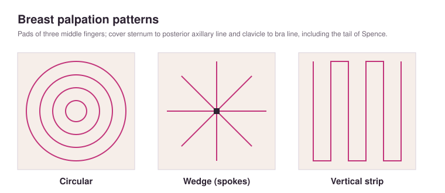
- Before touching a breastAlways get permission; wear gloves if skin isn't intact
- Nipple discharge checkCompress gently; discharge is unexpected in nonlactating women
- Pendulous breast palpationSupport the lower breast with one hand and palpate against it
- Breast nodule documentationLocation (quadrant or clock), size (cm), shape, consistency, discreteness, tenderness, erythema, dimpling, lymphadenopathy, mobility
- Expected breast findingsOne breast slightly larger; round or oval darker areolas; everted nipples; symmetric venous patterns
- Breast findings associated with cancerThickened skin, unilateral dilated veins, dimpling, edema, unilateral rash, recent nipple inversion, peau d'orange, change in size or contour
- Peau d'orangeOrange-peel dimpling caused by edema dilating hair follicles
- Fibrocystic breast diseaseTender cysts, more prominent during menstruation
- GynecomastiaBreast enlargement in males (adolescents or older adults)
- Breast aging changesGlandular tissue replaced by fat (softer, flatter, more pendulous); nipples smaller, flatter, may invert
- Thorax techniquesInspection, palpation, percussion, auscultation
- Thorax positioningPosterior: sitting or standing. Anterior: sitting, lying, or standing
- Lung lobesRight has 3, left has 2; auscultate the right middle lobe at the axilla
- Midsternal lineCenter of the sternum
- Midclavicular lineMidpoint of the clavicle
- Anterior axillary lineAnterior axillary fold
- Midaxillary lineApex of the axilla
- Posterior axillary linePosterior axillary fold
- Scapular linesInferior angle of each scapula
- Vertebral lineCenter of the spine
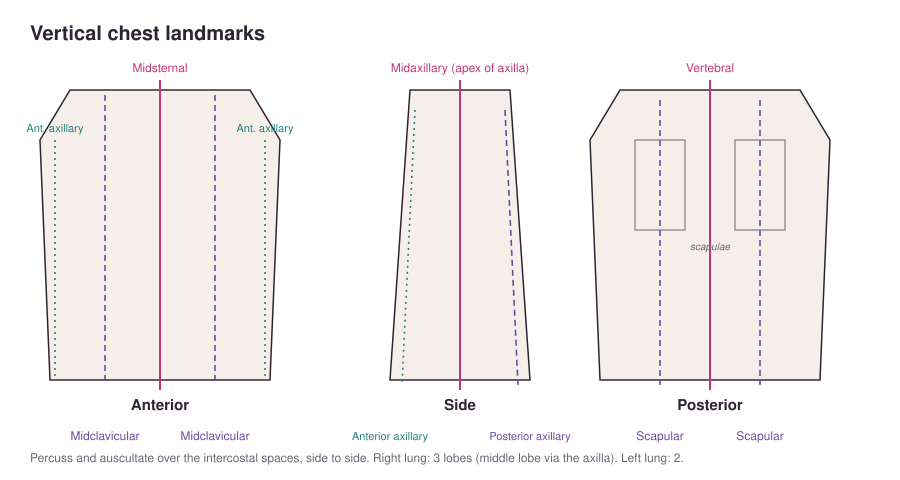
- Where to percuss and auscultateOver the intercostal spaces, in a side-to-side pattern; each space is numbered by the rib above it
- Counting respirationsDon't tell the client you're counting, because it may change their breathing
- Expected respiratory inspectionRR 12–20 and regular; effortless, quiet, symmetric breathing; no accessory muscle use or retractions; no deformities; trachea midline
- Expected oxygen saturation95% or greater
- Prolonged expirationCommon in COPD (difficulty moving air out)
- Signs of increased work of breathingAccessory muscle use (neck and intercostal muscles), intercostal retractions, sitting upright or leaning forward (orthopneic position)
- Expected chest shapeTwice as wide as it is deep; AP diameter one-third to one-half of the transverse diameter
- Barrel chestAP diameter about equal to transverse; seen with aging and chronic lung disease
- Thorax palpation patternAnterior from above the clavicles to the costal angle and out to the midaxillary line; posterior from above the scapulae to below the 12th rib
- Chest excursionThumbs at T9–T10 with a skin fold between; on a deep breath, thumbs should move apart symmetrically
- Tactile fremitusPalms on the chest while the client says "99"; vibration should be symmetric and strongest near the top
- Increased fremitusPneumonia
- Decreased or absent fremitusPneumothorax
- ResonanceNormal lung percussion sound; low-pitched, hollow (air-filled)
- Dullness on lung percussionFluid or solid tissue; pneumonia, tumor, masses
- HyperresonanceTrapped air; emphysema or pneumothorax
- Maximizing breath soundsDiaphragm directly on skin; client takes deep breaths through an open mouth; quiet room; client doesn't talk; treat pain; sit upright
- Positioning for posterior lung soundsClient crosses their arms in front of the chest to separate the scapulae
- Auscultation techniqueListen to a full inspiration and expiration at each site; let the client rest if they get lightheaded
- Bronchial soundsLoud, high-pitched, hollow; over the trachea and larynx (anterior only); expiration longer than inspiration
- Bronchial sounds heard over peripheral lungAbnormal
- Bronchovesicular soundsMedium pitch, blowing; over the main bronchi (anterior and posterior); inspiration equals expiration
- Vesicular soundsSoft, low-pitched, breezy; over peripheral lung fields toward the bases; inspiration longer than expiration
- Crackles (rales)Wet popping from air through fluid or collapsed alveoli snapping open; most common at the end of inspiration; don't clear with coughing; can mean fluid overload
- WheezesContinuous sounds through constricted airways; high-pitched (common with asthma) or low-pitched; mild wheezing usually on expiration only, severe wheezing throughout (Ex: asthma, inflammation, mucus plugs, tumors)
- RhonchiLow-pitched snoring or rumbling from fluid or mucus in large airways; may clear with coughing
- Rhonchi checkHave the client take a deep breath and cough a couple of times, then listen again
- Pleural friction rubCoarse grating or scratching from inflamed pleura rubbing together; painful; doesn't clear with coughing
- StridorHigh-pitched crowing heard without a stethoscope; upper airway obstruction; life-threatening
- Diminished breath soundsHard to hear; increased adipose tissue, atelectasis, pleural effusion, pneumonia
- AtelectasisAbsent breath sounds in the lower lobe bases; caused by hypoventilation or obstruction from secretions, fluid, or air
- Absent breath soundsCollapsed or surgically removed lobes
- Lung aging changesBarrel chest, lower vital capacity, less chest expansion, weaker cough reflex, less effective cilia, fewer alveoli, higher infection risk, kyphosis
Heart & Peripheral Vascular
- Cardiac assessment techniquesInspection, palpation, auscultation
- Cardiac assessment equipmentStethoscope, BP cuff, watch, two rulers (for JVP), penlight
- Expected adult heart rate60–100/min
- Best indicator of fluid retentionDaily weight (more accurate than checking edema)
- Aortic areaRight of the sternum, 2nd intercostal space
- Pulmonic areaLeft of the sternum, 2nd intercostal space
- Erb's pointLeft of the sternum, 3rd intercostal space
- Tricuspid areaLeft of the sternum, 4th intercostal space
- Apical/mitral areaLeft midclavicular line, 5th intercostal space (PMI)
- Finding the 2nd intercostal spaceAngle of Louis (where the manubrium meets the sternum); the space is just below the 2nd rib
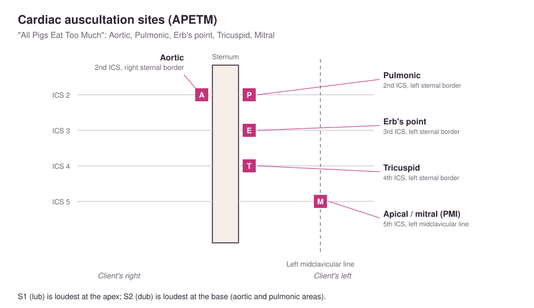
- S1 ("lub")Mitral and tricuspid valves close; start of systole (contraction); listen with the diaphragm at the apex
- S2 ("dub")Aortic and pulmonic valves close; start of diastole (relaxation); listen with the diaphragm at the aortic area
- Where S1 and S2 are loudestS1 at the apex; S2 at the base (aortic and pulmonic areas)
- Telling S1 from S2S1 coincides with the carotid pulse; the pause after S2 is longer (diastole)
- Split heart soundSounds like a stutter; valves on each side don't close at the same time (Ex: bundle branch block)
- S3Ventricular gallop after S2 ("Ken-tuck'-y"); rapid ventricular filling; can be expected in young adults; associated with CHF; use the bell
- S4Atrial gallop just before S1 ("Ten'-nes-see"); strong atrial contraction; can be expected in older and athletic adults; associated with HTN, CAD, MI; use the bell
- MurmurBlowing or swishing from increased or altered blood flow; systolic murmurs follow S1, diastolic follow S2; use the bell
- Stenotic valveDoesn't open widely; turbulent flow causes a murmur
- Regurgitant (incompetent) valveDoesn't close tightly; backflow causes a murmur
- Murmur grade 1Hard to hear, even in a quiet room
- Murmur grade 2Clearly audible but quiet
- Murmur grade 3Moderately loud
- Murmur grade 4Loud, with a thrill
- Murmur grade 5Very loud, easily palpable thrill
- Murmur grade 6Very loud, may be heard without touching the chest; palpable and visible thrill
- ThrillPalpable vibration (like a purring kitten); accompanies a murmur or cardiac malformation
- BruitBlowing or swishing from obstructed blood flow; use the bell
- Pericardial friction rubHigh-pitched, scratchy sound (like sandpaper) from an inflamed pericardium; heard throughout systole and diastole; loudest at the apex
- DysrhythmiaHeart fails to beat at regular intervals
- Bell vs. diaphragmBell: low-pitched extra sounds (S3, S4, murmurs, bruits). Diaphragm: S1, S2
- Apical heart rateCount for a full minute; note the rhythm
- Pulse deficitRadial pulse slower than apical pulse; report to the provider immediately
- Pulse deficit procedureTwo nurses count apical and radial pulses at the same time for 60 sec; a difference of 2 or more beats means a deficit
- Positions for heart auscultationSitting and leaning forward; supine; turned to the left side (best for extra sounds and murmurs)
- Hard-to-hear heart soundsReduce noise, put the stethoscope on bare skin, have the client sit up and lean forward or lie on their left side
- PMIGentle pulsation just medial to the left midclavicular line at the 4th–5th intercostal space; may not be visible in obese or muscular clients; displace large breasts
- Expected PMI sizeNo larger than a nickel
- Enlarged or displaced PMILeft ventricular hypertrophy
- Heave or liftForceful visible elevation of the chest wall, usually at the left sternal border or PMI; indicates heart failure
- Lift vs. heaveLift: pulsation forceful enough to lift your fingers. Heave: rolling pulsation under your fingers
- Palpating the PMI and checking for heaves or thrillsAdvanced technique performed by an advanced provider
- Jugular vein inspectionHead of bed at 30–45°; expect no distention, with visible carotid pulsations
- Positioning to check JVDSupine with the head elevated about 45°, head turned; JVD at 45° is unexpected and should be reported
- JVDBlood backing up from the right atrium into the jugular veins; most commonly right-sided heart failure
- JVD vs. carotid pulsationCarotid pulsation matches the radial pulse and isn't obliterated by light pressure; jugular pulsation disappears with gentle pressure
- JVP measurementExpect under 2.5 cm (1 in) above the sternal angle; measured with two rulers in a T shape
- Elevated JVPBilateral: right-sided heart failure. One side only: obstruction
- Absent carotid pulsationDecreased force of blood flow
- Carotid artery qualityShould feel soft and pliable; stiff suggests atherosclerosis
- Carotid bruit checkBell with light pressure at 2–3 points along the artery; client may hold their breath briefly
- Bruit auscultation sitesCarotids; abdominal aorta (below the xiphoid); renal arteries (midclavicular, above the umbilicus); iliac arteries (below the umbilicus); femoral arteries
- Pulse sitesTemporal, carotid, apical, brachial, radial, femoral, popliteal, dorsalis pedis, posterior tibial
- Carotid pulseBeside the trachea, medial to the sternocleidomastoid; palpate one side at a time
- Why palpate one carotid at a timeVagal stimulation drops HR and BP; occluding both can cause loss of consciousness
- Radial pulseThumb side of the wrist
- Brachial pulseAntecubital fossa, above the elbow
- Femoral pulseMidway between the symphysis pubis and the anterosuperior iliac spine
- Popliteal pulseBehind the knee, deep in the popliteal fossa, just lateral to midline
- Dorsalis pedis pulseTop of the foot, lateral to the great toe extensor tendon
- Posterior tibial pulseBehind and below the medial malleolus
- Comparing pulsesPalpate both sides at the same time (except carotids) to check symmetry
- Order for palpating peripheral pulsesStart at the most distal pulse; compare both sides
- Most commonly tested lower-extremity pulseDorsalis pedis; may need a Doppler to find it
- If both radial pulses are expectedUsually no need to check brachial pulses
- 0 pulseAbsent, unable to palpate
- 1+ pulseDiminished, weak and thready
- 2+ pulseBrisk, expected
- 3+ pulseIncreased, full and easy to palpate
- 4+ pulseFull volume, bounding
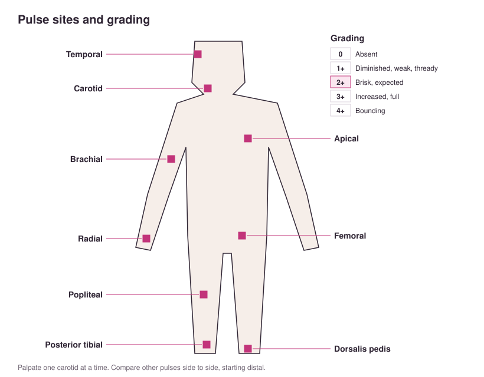
- Capillary refillPress the nail bed until it blanches, then release; color should return in under 3 seconds
- Delayed capillary refillOver 3 sec means decreased perfusion; can be expected in older adults and clients with chronic illness
- Venous insufficiency skinBrown pigmentation
- Arterial insufficiency skinShiny, translucent, hairless skin on the toes and foot
- Hair loss below the midcalfCommon with peripheral vascular disease
- Peripheral vein inspectionLook for varicosities, redness, swelling
- Spider angiomaRed center with radiating red legs, up to 2 cm, possibly raised
- Cherry angiomaRed, round, 1–3 cm, possibly raised
- Spider veinBluish, spider-shaped or linear
- PetechiaeDeep reddish purple, flat, 1–3 mm
- PurpuraDeep reddish purple, flat, larger than 3 mm
- EcchymosisBruise; purple fading to green or yellow; flat; variable size
- HematomaRaised ecchymosis
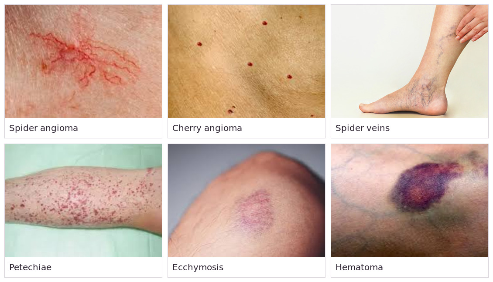
- Bruising in dark skinDarkened areas; bleeding may show only as swelling or warmth
- Cardiovascular aging changesSystolic hypertension with widened pulse pressure; PMI harder to palpate; stiff, narrowed vessels; lower cardiac output and activity tolerance; calcified valves; thickened left ventricle; reduced peripheral circulation
Abdomen
- Abdominal assessment orderInspection → auscultation → percussion → palpation; auscultate before touching because percussion and palpation alter bowel sounds
- Preparing for the abdominal examHave the client void; supine with arms at sides and knees slightly bent
- Abdominal quadrantsLines through the umbilicus, from the xiphoid to the symphysis pubis: RUQ, LUQ, RLQ, LLQ
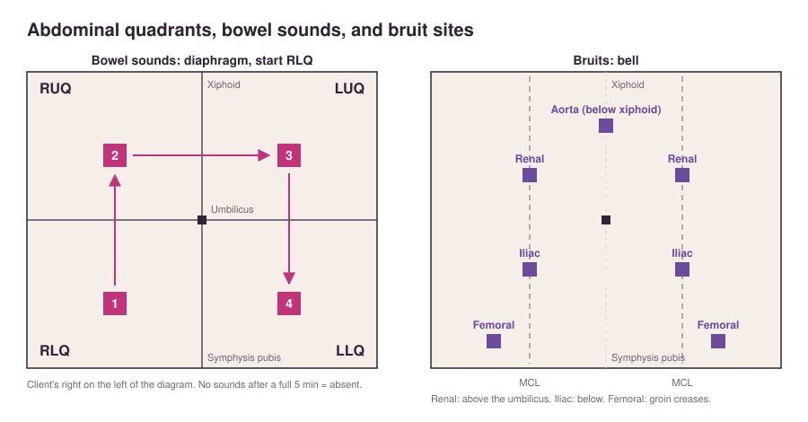
- Abdominal inspectionGuarding or splinting; umbilicus; lesions, scars, striae, dilated veins; jaundice, cyanosis, ascites; contour; peristalsis; pulsations
- Inspecting abdominal contourView from more than one angle (from the side and from the foot of the bed)
- Expected abdominal skinEven color, usually a bit lighter than sun-exposed skin; some visible veins are expected
- StriaeSilver stretch marks; expected finding
- Dilated abdominal veinsUnexpected; possible cirrhosis, liver disease, portal hypertension, or IVC obstruction
- AscitesFluid in the abdomen; possible cirrhosis
- Visible peristalsisSeen in thin adults or with intestinal obstruction
- Abdominal pulsationsBeats midline above the umbilicus are expected in thin adults; a pulsating mass is unexpected
- Flat abdomenHorizontal line from the xiphoid to the symphysis pubis
- Convex abdomenRounded
- Concave abdomenSunken
- Distended abdomenLarge protrusion from fat, fluid, or flatus; measure at the umbilicus to track fluid retention
- Distention from fatRolls of adipose tissue along the sides; skin not taut
- Distention from fluidFlanks protrude; protrusion shifts to the dependent side when the client turns
- Distention from flatusMainly midline protrusion; flanks unchanged
- HerniaProtrusion through the abdominal wall, more visible when the client flexes the abdominal muscles
- Bowel sound techniqueUse the diaphragm, ideally between meals; start in the RLQ; if no sounds, move to RUQ → LUQ → LLQ
- Why start bowel sounds in the RLQBowel sounds are usually active around the ileocecal valve
- Bowel sounds heard in the RLQNot always necessary to listen in other quadrants (follow facility policy)
- Expected bowel soundsHigh-pitched clicks and gurgles 5–35/min
- BorborygmiLoud growling ("stomach growling") from hyperperistalsis, often heard without a stethoscope; unexpected finding
- Hyperactive bowel soundsLouder and more intense; diarrhea, anxiety, bowel inflammation, food reactions
- Hypoactive bowel soundsSoft, under 5/min; medications, anesthesia, constipation, obstruction
- Absent bowel soundsNo sounds after a full 5 minutes; possible intestinal obstruction
- Unexpected bowel soundsHave a second nurse validate
- Abdominal vascular soundsSwishing suggests blood vessel or liver disorders; report to the provider
- Listening for abdominal bruitsUse the bell over the aorta, renal, iliac, and femoral arteries
- Abdominal aortic bruitPossible abdominal aortic aneurysm (turbulent flow)
- Abdominal friction rubInflamed peritoneum rubbing together; listen over the liver and spleen during a deep breath; sounds like sandpaper
- Abdominal percussion techniqueNondominant hand palm down; tap its middle finger with the dominant middle finger
- TympanyExpected drum-like sound over most of the abdomen; lower pitch over the gastric bubble in the LUQ
- Abdominal dullnessOver the liver, spleen, or a distended bladder
- Percussion tones by densityResonance (lung) is lowest pitch, tympany (gas) is higher, dullness (solid organ or full bladder) is highest
- Liver span6–12 cm at the right midclavicular line; larger means hepatomegaly
- CVA tendernessFist percussion over the costovertebral angles; tenderness suggests kidney inflammation; expect none
- CVA percussion techniqueOne hand flat over the costovertebral angle, thump it gently with your other fist; should not cause pain
- Helping the client relax for palpationTalk casually; have them raise their knees
- Light abdominal palpationFinger pads of one hand, about 1 cm (0.4 in) to 1.3 cm (0.5 in) deep, gentle dipping motion in each quadrant
- Light palpation and the bladderUseful for detecting bladder fullness between the umbilicus and symphysis pubis
- Order of palpating tender areasPalpate them last
- Expected palpation findingsSoft, nontender, relaxed, no masses; bladder palpable only if full
- Voluntary guardingAnxious client tenses their abdominal muscles; having them exhale helps
- Involuntary rigidityPersistent hardness even when the client relaxes; indicates inflammation of the abdominal cavity
- Rigid abdomenPeritoneal irritation; needs follow-up, especially with hypoactive or absent bowel sounds
- Tenderness found on palpationStop palpating and notify the provider; watch the client's face throughout
- Abnormal palpation findingsDistention, rigidity, tenderness, masses, rebound tenderness
- Deep palpationReserved for advanced providers; two hands, 2.5–7.5 cm deep; stool may be palpable in the descending colon
- Rebound tenderness (Blumberg's sign)Press firmly for 4 sec at a 90° angle, then release; pain on release means peritoneal irritation
- Never palpate deeplyAbdominal masses, tender organs, surgical incisions
- Abdominal aging changesRounder, protruding abdomen; peritonitis harder to detect (less pain, guarding, fever); less saliva and digestive secretions; slower motility
Musculoskeletal
- Musculoskeletal assessmentGait, alignment, symmetry, muscle mass and tone, ROM, involuntary movements, inflammation, deformities, height, posture, spine
- Musculoskeletal techniquesInspection and palpation; compare both sides
- Functional assessment focusThe nurse assesses musculoskeletal function with safety in mind, tailored to the client
- Muscle toneBalanced muscle tension that maintains posture; slight resistance during passive ROM
- FlaccidityDecreased (lax) muscle tone
- SpasticityIncreased muscle tone
- Expected spinal curves (viewed from the side)Concave cervical, convex thoracic, concave lumbar, convex sacral
- Double S curveNormal spinal contour viewed from the side
- KyphosisExaggerated thoracic curve; common in older adults
- Kyphosis significanceCommon in older adults with osteoporosis or vertebral fractures; can restrict lung expansion
- LordosisExaggerated lumbar curve; common in pregnancy
- ScoliosisExaggerated lateral curve; check with the client bending at the waist and reaching for the toes
- Clue for scoliosisAsymmetric skin folds on the back; uneven hips or shoulders when bending forward
- Scoliosis severityUnder 20–30° is mild; over 60° can restrict lung function
- Height lossGradual height loss is expected with aging
- Passive ROMNurse moves the joints; never past pain or resistance
- Active ROMClient repeats the movements the nurse demonstrates
- Joint assessmentWarmth, inflammation, edema, stiffness, crepitus, deformity, tenderness, limitation, instability
- CrepitusClicking or crunching in a joint; common in knees without pain
- FlexionDecreases the angle between two bones
- ExtensionIncreases the angle between two bones
- HyperextensionMovement beyond normal extended position
- SupinationFront surface faces up
- PronationFront surface faces down
- AbductionAway from midline
- AdductionToward midline
- DorsiflexionFoot and toes flexed upward
- Plantar flexionFoot and toes bent downward
- EversionBody part turned away from midline
- InversionBody part turned toward midline
- External rotationJoint rotated outward
- Internal rotationJoint rotated inward
- Muscle strength testingFlex and extend the shoulder, elbow, wrist, hip, knee, and ankle against resistance; test grip by having the client squeeze your index and middle fingers
- Expected muscle strengthEqual on both sides, or slightly stronger on the dominant side
- Muscle strength 0No contraction
- Muscle strength 1Trace contraction (about 10%)
- Muscle strength 2Moves with gravity eliminated (about 25%)
- Muscle strength 3Moves against gravity (about 50%)
- Muscle strength 4Moves against some resistance (about 75%)
- Muscle strength 5Overcomes full resistance (100%, expected)
- Dominant-side muscle sizeUsually slightly larger; less than 1 cm difference is not significant
- HypertrophyMuscle enlargement from strengthening
- Muscle atrophyDecreased muscle size from disuse; feels soft and boggy
- Gait assessmentObserve when the client is unaware; expect steady, smooth, coordinated gait
- Normal gait componentsHeel strike, foot flat, push off from the ball, swing through; toes forward; base 5–10 cm (2–4 in); arms swing opposite the legs
- Gait abnormalitiesSmall halting steps, favoring one side, wide base, foot drop
- Four gaits testedRegular, heel-to-toe, tiptoe, heels
- Romberg testFeet together, arms at sides, eyes closed; expect minimal sway for at least 5 sec (balance)
- Romberg: when to stopIf the client sways more than a couple of inches; document difficulty maintaining balance
- Heel-to-toe walkHeel in front of toes in a straight line; expect no loss of balance
- Get-up-and-go testTime the client rising from a chair without using the arms, walking 3 m (10 ft), turning, returning, and sitting; assistive devices are allowed
- Musculoskeletal aging changesLess muscle mass and strength; bone loss and height loss (osteoporosis risk); degenerative joints; limited ROM; kyphosis; wider stance
Safety
National Performance Goals & Culture of Safety
- SafetyFreedom from injury; providing safety is a major nursing responsibility
- Factors affecting a client's ability to protect themselvesAge, mobility, cognitive and sensory awareness, emotional state, communication ability, lifestyle and safety awareness
- AllergiesNurse assesses, reports, and documents allergies and avoids exposing the client to allergens
- Joint Commission (JC)Reviews safety issues each year and grants accreditation to facilities that meet its goals and standards
- National Performance Goals (NPGs)14 JC goals for hospitals and critical-access hospitals
- National Patient Safety Goals (NPSGs)JC goals for other facility types (such as assisted living and ambulatory care)
- National Patient Safety Goals on the lecture slidesIdentify clients correctly, improve staff communication, use medications safely, use alarms safely, prevent HAIs, identify client safety risks, reduce suicide risk, Universal Protocol to prevent surgical adverse events
- Client identificationAt least two identifiers: name, DOB, medical record number (MRN), phone number
- Never use for identificationRoom number, because rooms can change
- Asking for identifiersUse open-ended questions ("What is your name and date of birth?"), then confirm with the ID band or EMR
- Barcode scanningAdditional ID safety step; never skip it
- Same-name clientsFollow the facility's same-name alert policy; use extra identifiers (SSN, address, phone, photo)
- Causes of identification errorsMultiple records open at once, fatigue, poor time management, EMR malfunctions, nonspecific aliases ("baby girl")
- Critical resultLab or diagnostic result outside the expected range that can be life-threatening if not addressed (Ex: sodium 120 mEq/L (expected 136–145), risk of seizures)
- Facility rules for reporting critical resultsDefinition of a critical result, time frame for reporting to the provider, written documentation of who reported and who received
- How critical results are communicatedDirectly to the provider in person or by phone; never by voicemail
- Clinical alarm systemsBuilt-in alerts on equipment (Ex: bed and chair alarms, IV and feeding pumps, heart monitors, ventilators)
- Alarm fatigueDesensitization from frequent nuisance alarms, leading to slower or missed responses
- Alarm safety actionsDon't ignore or silence alarms, prioritize alarms appropriately, report malfunctioning equipment immediately
- Unit with the most alarm noiseIntensive care unit (ICU)
- Time-outA pause in all activity in the OR or procedure room before surgery, to prevent adverse events
- Preprocedure verification stepsTwo identifiers, mark the surgical site, perform a time-out
- Client role in preprocedure verificationStates identifiers and the procedure in their own words, points to the site; verify consent
- Who marks the surgical siteSurgeon or another clinician (APRN, PA) when there is more than one possible site
- When site marking isn't doneBilateral organs (ovaries, tonsils); mouth, teeth, or perineum (requires a signed waiver)
- Medication labelingAll medications in a procedure are labeled (name, dose, date, time mixed); discard any unlabeled medication
- Anticoagulant safetyMonitor weight, renal and hepatic labs, dose and frequency, drug and food interactions; teach risks, follow-up, and lab monitoring (Ex: warfarin, heparin, enoxaparin)
- Medication reconciliationCompare home medications with new prescriptions, find discrepancies or interactions, resolve them
- When medication reconciliation is doneAt admission, discharge, transfers between levels of care, and provider changes
- Hospital-associated infections (HAIs)Infections acquired during a hospital stay; also called nosocomial infections
- CLABSICentral line-associated bloodstream infection
- CAUTICatheter-associated urinary tract infection
- SSISurgical site infection
- VAPVentilator-associated pneumonia
- MDROMultidrug-resistant organism (Ex: MRSA, VRE, C. diff)
- Most important infection prevention measureHand hygiene
- Hand hygiene methods (CDC)Antibacterial soap and water, alcohol-based gel or foam, surgical scrub
- Pain management goalIndividualized plan; use nonpharmacological and non-opioid treatment before opioids (CDC); monitor for opioid overuse
- Informed consentType of treatment, benefits, risks, side effects, alternatives; presented in a way the client understands (interpreter, adaptations)
- Maltreatment, neglect, exploitationAssess at entry and ongoing; know reporting obligations, time frames, and agencies; refer for services
- Suicide screeningAll admissions are screened; a positive screen always leads to a follow-up assessmentNote: ATI specifies all clients 12 and older whose primary admitting diagnosis is a behavioral health condition, using a validated tool
- Follow-up for a positive suicide screenAsk directly about suicidal thoughts, a plan, how long, and self-injury
- Client at risk for suicideNever leave alone; continuous (round-the-clock) observation; remove harmful items using an environmental checklist; search items brought in; manage visitors
- Waived testingSimple low-risk tests done outside the lab; staff competency checked at orientation and at least annually (Ex: point-of-care blood glucose)
- Staffing goalAdequate 24-hr staffing; orientation and ongoing competency checks
- Imaging safetyQualified technologists, assess the client before imaging, correct equipment and positioning, review incidents
- Transplant safetyWritten standardized procedures for acquiring, storing, and issuing organs and tissue
- Discrimination and biasBarriers include access, age, education, gender identity, race, ethnicity, language, religion, sexual orientation, income, ability; clients deserve timely, respectful care and interpreters
- Speak Up initiativeJC program encouraging clients to speak up, including about discrimination
- Health equity goalReduce disparities by assessing social needs: transportation, literacy, housing, food
- "Never events"National Quality Forum list of serious, preventable events that facilities adopt as quality priorities
- To Err Is Human (IOM, 1999)Report that made a culture of safety a priority to reduce deaths, HAIs, complications, and nurse burnout
- Culture of safetyOpen and honest communication, confidential reporting, reporting both incidents and near misses
- Transforming Care at the Bedside70% of nurse time at the bedside, leadership development, rapid response teams, standardized communication
- Hourly roundingCheck every client hourly for toileting, positioning, pain, and safety (side rails, bed position, call light); decreases falls
- AHRQ safety recommendationsPrevent infections, simplify discharge instructions, VTE protocol, better medication education, limit provider work hours, work with a patient safety organization, safer facility design, survey safety culture, better teams, evidence-based protocols for invasive procedures
- Nurse fatigueIncreases errors and injuries; under 4 hr of sleep in 24 hr makes a motor vehicle crash 11.5 times more likely
- Accrediting and regulatory bodiesJC, Magnet, CMS, OSHA, state health department, board of nursing, local fire department and code inspectors
- Workplace bullyingRepeated harassment, isolation, or belittling; reduces job satisfaction and retention and increases errors
- Preventing bullyingRelationship-oriented culture, positive communication, trust, respect, strong leadership
- Workplace violence (OSHA)Any act or threat of violence, harassment, intimidation, or disruptive behavior at work
- Highest-risk units for workplace violenceBehavioral health, long-term care, emergency department
- Risk factors for workplace violenceClients with a history of violence, working alone in homes, no escape route, no way to call for help, no de-escalation training, short staffing, high turnover, no security, long wait times
- Warning signs of a violent coworkerUnexplained absences, declining work, persistent complaints, policy abuse, mood swings, substance use, outbursts at criticism, paranoia
- Reporting workplace violenceReport to your supervisor or HR; facilities need a zero-tolerance policy
- Employee rights (OSHA)Hazard information in understandable language, a safe workplace, anonymous OSHA complaints, access to injury records, no retaliation
- Reporting employer retaliationReport to OSHA within 30 days
Communication & Unexpected Events
- Rapid response team (RRT)Team that brings critical care skills to the bedside when a client's condition changes; follow the facility's notification policy
- RRT membersICU/critical care nurse, provider, respiratory therapy, lab, pharmacyNote: ATI lists the ICU nurse, respiratory therapy, and critical care provider; lab and pharmacy are from the lecture
- When to call the RRTSudden change in vital signs; low SpO2 despite oxygen; chest pain despite nitroglycerin; seizure; sudden mental status change; staff concern about the client
- Not an RRT triggerA single high blood glucose (assess and notify the provider)
- SBARSituation, Background, Assessment, Recommendation
- ISBARRIdentity, Situation, Background, Assessment, Recommendation, Read back
- ISBARR: IdentityIntroduce yourself and where you're calling from
- ISBARR: SituationClient name and age, admitting diagnosis, chief complaint or urgent need
- ISBARR: BackgroundMedical history, current medications, advance directives
- ISBARR: AssessmentOverall impression and significant findings (assessment, labs, tests, vital signs)
- ISBARR: RecommendationTreatment given and the client's response; what you need and want to happen
- ISBARR: Read backRepeat the order back to the provider to confirm
- Benefits of RRTs plus SBARBetter outcomes, safety, and nurse retention; lower costs
- Handoff reportDone at the bedside; written or verbal
- Near missAn error caught before it reached the client (Ex: Celebrex ordered as Celexa, caught during medication reconciliation)
- Client safety eventUnexpected event, with or without injury, that could have caused harm (Ex: NPO client is served a tray and the procedure is delayed)
- Adverse eventUnexpected harm to the client (Ex: client falls out of bed and sprains a wrist)
- Sentinel eventCritical, unexpected event causing death, permanent harm, or severe temporary harm (Ex: wrong-site surgery)
- Not a sentinel eventExpected outcomes of illness (such as an expected death)
- Common sentinel eventsFalls with serious injury, wrong-site surgery, retained foreign object, suicide in the facility, infant abduction
- Occurrence (incident) reportTracks events to prevent recurrence; not punitive
- Steps after an incidentMake the client safe, notify the nurse leader and provider, then complete the occurrence report
- Occurrence report contentPeople involved, witnesses, contributing problems or systems, outcome
- Events requiring an occurrence reportFalls or injuries; unexpected drug or vaccine reactions; wrong or incorrect medication; property damage or loss; blood or body fluid exposure; actions against policy
- Purpose of incident reportsIdentify trends, patterns, and root causes
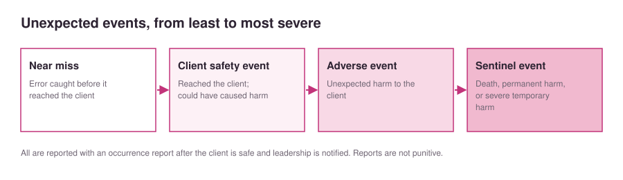
Falls & Injury Prevention
- FallUnplanned descent to the floor, with or without injury
- Main safety risk for older adultsFalls; 1 in 4 older adults fall each year
- Why fall prevention matters financiallyMedicare and Medicaid don't reimburse treatment of fall-related injuries
- Physical fall risk factorsStroke, amputation, recent surgery, MS, visual impairment, chronic pain, malnutrition, weakness, unsteady gait or assistive devices, incontinence or urinary frequency, orthostatic hypotension
- Cognitive fall risk factorsSleep disorders, impulsiveness, disorientation or confusion, dementia, depression
- Environmental fall risk factorsClutter, poor lighting, slippery floors
- Other fall risk factorsHistory of falls; medications (antidepressants, antihypertensives, anticonvulsants, sedatives); age; frequent toileting; unit staffing levels
- More than one risk factorGreater fall risk
- Fall risk priority actionComplete a fall-risk assessment first
- When to do fall-risk assessmentsOn admission, at regular intervals, with a change in condition, on transfer, and after a fall
- Morse Fall Scale factorsHistory of falling, secondary diagnosis, ambulatory aid, IV access, gait, mental status
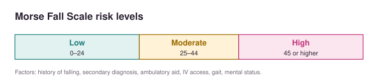
- Universal fall precautionsNonskid footwear, bed low and locked, wheelchair brakes on, no clutter, good lighting, call light and belongings in reach, orientation to the room and call light
- Call light safetyClient gives a return demonstration; keep it within reach; answer promptly
- Teaching for orthostatic hypotensionRise slowly; sit on the side of the bed a few seconds, then stand a few seconds before walking
- Fall-risk alertsColor-coded wristband or room signage
- Room placement for fall riskNear the nurses' station
- Side rails for sedated, unconscious, or compromised clientsKeep side rails up
- Client who gets up without helpAvoid full side rails, because they may climb over them
- All 4 side rails up to keep a client in bedConsidered a restraint
- Side rails that are not a restraintPrevent accidental falls (stretcher, recovering from anesthesia, sedated, unable to get out of bed); two upper rails let the client still exit
- Risks of side railsEntrapment, strangulation, or injury from climbing over
- Bed and chair alarmsAlert staff when the client gets up; they don't prevent falls; considered a restraint in long-term care
- Other fall interventionsRegular toileting, gait belts, assistive devices within reach, hourly rounding, client and family education
- Video monitoringFor confused, agitated, seizure-prone, or immobile clients; one staff member watches several clients; works only with dedicated observation
- Bedside sitterDirect observation for high-risk clients; always used for suicidal ideation; can fragment care
- ElopementClient wandering off the unit
- Hospital-acquired injuryHarm that occurs in the hospital and was not present on admission
- Examples of hospital-acquired injuriesSSI, CAUTI, CLABSI, burns or shock, transfusion incompatibility, falls or trauma, unsafe insulin use, DVT, pressure injury
- DVTBlood clot in a deep vein, usually the leg; hospital-acquired if it develops from a hospital stay
- Pressure injuryDamage from sustained pressure (decubitus ulcer, bedsore)
- Clients at high risk for injuryMedical conditions (stroke, MS, Parkinson's, frailty); behavioral conditions (schizophrenia, substance use); vision, communication, or cognitive disabilities
- Communication disabilityDifficulty sending, receiving, or processing messages; 3 times more likely to have adverse events (Ex: hearing impairment, autism, aphasia)
- Screening toolsEasy and inexpensive; identify risk early; a positive screen requires a full assessment
- Valid and reliable toolMeasures what it's meant to measure and minimizes false positives
- Braden ScalePressure injury risk tool
- FrailtyDecline in function across body systems with aging; evaluate on admission
- WHO definition of an older adult60 years and older
- CDC fall prevention programSTEADI (Stopping Elderly Accidents, Deaths, and Injuries)
Restraints & Seizures
- Purpose of restraintsProtect the client, other clients, or staff; last resort, for the shortest time possible
- Never use restraints forStaff convenience, punishment, short staffing, extremely unstable clients, or clients who can't tolerate seclusion
- Alternatives before restraintsSocial interaction, diversion, de-escalation, room near the nurses' station, family or sitter, bed or chair alarm, reorientation
- Indications for restraintsUnsafe movement; pulling at tubes, IVs, catheters, or drains; aggression; danger to self or others; alternatives have failed
- Least restrictive approach firstCalming measures: decrease stimulation, provide comfort or companionship
- Mechanical restraintDevices fastened to the wrists or ankles; least restrictive are soft restraints (hand mitt, then soft wrist or elbow); most restrictive is four-point
- Physical restraintManually holding the client; short-term only (such as for an injection)
- Chemical restraintMedications to control behavior (Ex: benzodiazepines, antipsychotics)
- Barrier restraintLimits movement with barriers (Ex: lapboard, concave mattress, bed enclosure, all 4 side rails)
- SeclusionClient alone in a locked room without consent; mainly in psychiatric settings
- Voluntary seclusionClient may request temporary seclusion if the environment is too stimulating
- Least restrictive mechanical restraintHand mitt
- Most restrictive mechanical restraintFour-point restraints (aggressive clients)
- Vest restraintsMany facilities don't use them due to strangulation and asphyxiation risk
- Restraint prescriptionWritten by the provider after a face-to-face assessment
- Required elements of a restraint prescriptionReason, type, location, duration, behavior that warrants restraint
- Restraint prescription time limit (adult)4 hours; renewable up to 24 consecutive hours
- PRN restraint ordersNot allowed
- Reevaluating restraint needAt least every 24 hours, and the provider must see the client within that time; reassess continually
- Restraint careRemove each restraint 15 min every 2 hr (or per policy); check skin, circulation, ROM, pain, and device position; offer food, fluids, toileting; monitor vital signs
- Applying a restraintPad bony prominences, fit two fingers under it, closure fastener on the outside, allow some movement
- Where to tie a restraintMovable part of the bed frame, out of the client's reach
- Where never to tie a restraintSide rails, because raising or lowering them can injure the client
- How to tie a restraintQuick-release knot or buckle for emergencies
- Mitt restraint applicationHand in the mitt, palm down on the pad; client can move all fingers
- Skin change under a restraintNotify the provider, treat the skin, replace a wet restraint, don't reapply without an order, stay with the client
- Impaired circulation in a restrained limbRemove the restraint immediately, reassess, notify the provider; don't reapply without an order
- Decreased ROM after restraintNotify the provider
- Restraint complicationsPressure injuries, skin tears, bruises, fractures, pneumonia, incontinence, hyperthermia, psychological trauma
- Death in restraintsSentinel event; must be reported
- Restraint documentationBehavior and events before restraint, alternatives tried, times applied and removed, type and location, behavior in restraints, care given, condition of the restrained part, response at removal, medications
- Discontinuing restraintsAs soon as safely possible, or switch to a less restrictive type
- SeizureSudden surge of abnormal electrical activity in the brain
- Partial (focal) seizureOne hemisphere
- Generalized seizureBoth hemispheres
- Status epilepticusProlonged seizure; medical emergency
- Seizure precautions setupSuction, oxygen, and oral airway at the bedside; padded side rails; baseline vital signs and SpO2; remove constrictive clothing and jewelry; IV access with a saline lockNote: ATI's injury-prevention lesson says to establish two IV sites
- AuraSensation that a seizure is coming; client should alert the nurse and remove dentures if possible
- During a seizureStay with the client and call for help; side-lying position; protect the head; remove nearby objects; loosen clothing; suction as needed; note the start time
- Never during a seizureRestrain the client or put anything in the mouth (except an oral airway in status epilepticus)
- Leaving to get help during a seizureWrong; stay and use the call light
- Seizure observationsStart time, duration, body parts involved, one or both sides, eye activity, incontinence, skin color
- Medication during a seizureBenzodiazepine IV (or IM if no IV), per prescription
- Glucose and seizuresCheck bedside blood glucose; replace glucose if needed
- After a seizureAssess mental status, vital signs, and SpO2; check gag reflex and ability to follow directions before giving food or fluids; reorient and reassure; quiet environment
- Post-seizure testingToxicology screen, anticonvulsant drug level, imaging, EEG
- Seizure documentationPrecipitating events, aura, movements, injuries, duration, postictal state; report to the provider
Environmental & Emergency Safety
- Common causes of fire in health care facilitiesElectrical or anesthetic equipment, smoking
- Fire safety knowledge for all staffExits, alarms, extinguishers, oxygen shut-off valves, evacuation plan; never block fire doors
- RACERescue, Alarm, Contain, EvacuateNote: ATI lists "E" as Extinguish
- RACE: RescueMove clients in immediate danger first; ambulatory clients can walk to safety
- RACE: AlarmPull the alarm, then report the fire's location and details
- RACE: ContainClose doors and windows; turn off oxygen and electrical devices; ventilate life-support clients with a bag-valve mask
- RACE: EvacuateEvacuate the area; extinguish small fires only if trained and safeNote: ATI lists this step as Extinguish: put out small fires if safe and the right extinguisher is available
- Priority when you discover a fireRescue clients near the fire
- PASSPull the pin, Aim at the base of the fire, Squeeze the handle, Sweep side to side
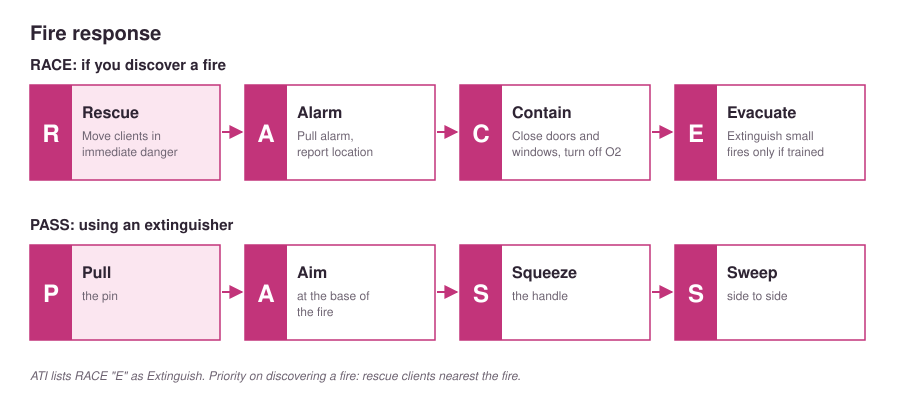
- Fire triangleHeat, oxygen, fuel; removing one stops the fire
- Lateral (horizontal) evacuationMove to a safe location on the same floor; preferred
- Vertical evacuationMove to a different floor
- Who to evacuate firstThose closest to the fire
- Evacuation precautionsClose doors; wrap clients in blankets and cover faces; stay low; don't run or panic
- Facility fire alarmsDistinct sound plus flashing or strobe lights; tested regularly
- Electrical safety checksLook for frayed or creased cords, a three-prong grounded plug, an intact three-hole receptacle, no sparking
- GFCIGround fault circuit interrupter; diverts stray current to the ground
- Safe electrical practicesDry hands and floor, don't roll over cords, pull by the plug, avoid extension cords
- Unsafe electrical equipmentTag it, remove it, notify clinical engineering
- Use equipment only afterProper instruction and a safety inspection
- Four routes of chemical exposureInhalation, skin or eyes, ingestion, injection (needlestick)
- Safety data sheet (SDS)Chemical hazard information, exposure prevention, first aid, cleanup; must be accessible to all staff
- Chemical exposure first aidRemove the chemical; use eyewash stations or emergency showers
- Chemical protectionPPE (gloves, gown, mask, face shield, goggles) and ventilation
- Radiation safety principlesReduce time, increase distance, use shielding (lead apron)
- Radiation dose: CT vs. x-rayCT delivers more
- Before any radiation procedureAsk about possible pregnancy and last menstrual period; hold non-emergency procedures if unsure and notify the provider
- Pregnant nurse and radiationNotify the manager; avoid or limit exposure
- Radioactive implants or medicationsWear PPE when handling the client's urine and blood
- Alpha radiationLeast risk; doesn't penetrate clothing; travels a few cm
- Beta radiationMiddle risk; short distance; specialized clothing needed
- Gamma radiationMost serious; penetrates clothing and tissue; requires lead shielding
- Early signs of radiation exposureNausea, vomiting, diarrhea, sometimes alopecia and burns
- Radiation decontaminationRemove and discard clothing; wash skin and hair; irrigate eyes; rescuers stay upwind
- Potassium iodideSaturates the thyroid so it won't absorb radioactive iodine
- Suspecting a biological mass-casualty eventMany clients arriving with similar symptoms
- Biological or chemical exposure careFull PPE if the agent is unknown; cut off clothing and double-bag it; decontamination shower
- Short-term effects of chemical exposureBlistering, breathing problems, BP and pulse changes, altered mental status
- Emergency preparedness (CMS)Hospitals must have a disaster plan, training at orientation and annually, and drills
- Validating disaster knowledgeTwice a year in acute care, once a year in long-term care
- Disaster plan nursing roleKnow your role, the chain of command, and common terminology
- Nursing CompactLets nurses practice in member states, helping during disasters
- Active shooterSomeone actively killing or trying to kill multiple people
- Active shooter priorityRun, then hide, then fight
- Threats of violenceTake them seriously; report to the charge nurse and follow the chain of command
Home & Community Safety
- Home safety assessmentRisk assessment tool, nursing history, physical exam, home hazard appraisal
- Who performs home hazard evaluationsHome health nurse, physical therapist, and/or occupational therapist (usually needs a provider prescription)
- Risk factors for client injuryAge and development, mobility and balance, safety knowledge, sensory and cognitive awareness, communication, home and work environment, community, lifestyle
- Adolescent injury riskWanting independence and relying on peers rather than family
- Adolescent safety teachingHazards of smoking, vaping, alcohol, drugs, unprotected sex; driver's ed; seat belts; no distracted or impaired driving; sports gear; firearms; check water depth before diving
- Adolescent emotional safetyWatch for depression, anxiety, or behavior changes; take talk of self-harm seriously
- Adolescent sun safetySPF 30 or higher, protective clothing, avoid sunbathing and tanning beds
- Adolescent social mediaDiscuss, monitor, and limit; parents model appropriate behavior
- Most common cause of death and injury in adultsMotor vehicle crashes
- Young and middle-aged adult concernsWorkplace accidents, heavy alcohol use, suicide, stress, obesity (highest in middle age)
- Adult safety teachingDefensive, sober driving; smoke and CO detectors; well-lit stairs; watch for depression; water safety; SPF 30 or higher
- Why prevention matters for older adultsLonger recovery and more complications from injuries
- Older adult burn riskDecreased tactile sensitivity
- Older adult fall risk factorsPhysical, cognitive, and sensory changes; impaired vision or hearing; nocturia and incontinence
- Bathroom safety modificationsGrab bars, nonskid mat, shower chair, raised toilet, step-free shower, bedside commode, electric razor (especially with anticoagulants), GFCI outlets, lock up cleaners
- Bedroom safety modificationsLower bed, hospital bed if needed, floor mat or motion alarms
- Kitchen safety modificationsCommon items within reach, step stool with rubber grips, stove auto shut-off, pot handles turned back, GFCI outlets
- General home modificationsBright or motion lighting, lever door handles, no throw rugs, cords secured along walls, no wheeled or swivel chairs, handrails, even flooring, tape on stair edges, pets and bowls out of the way, daily pill organizer
- Wall colorPaint walls one color to reflect more light
- Window blind cordsUse cordless blinds, or keep cords out of reach with no loops or knots
- Water heater temperatureNo higher than 120°F (49°C)
- Emergency numbersKeep poison control, police, and fire numbers on the phone or near it
- Home smoke alarmsOn every floor and outside sleeping areas; test monthly; change batteries every 6 months (when the clocks change)
- Home fire extinguishersEvery level, especially the kitchen, basement, and garage
- Home fire escape planTwo exits per room; rescue ladder for multilevel homes; practice twice a year (once at night); set a meeting spot
- Escaping a smoke-filled roomCover your mouth and nose with a damp cloth and stay low
- Clothes on fireStop, drop, and roll
- Home electrical fire preventionDon't overload outlets (one large appliance per outlet), unplug small appliances, replace damaged cords
- Space heatersKeep flammables at least 3 ft away
- Fireplace safetyInspect and clean the chimney yearly; burn only dry, seasoned wood
- Top cause of residential firesCooking
- Home oxygen: smokingNo smoking in the home, even when oxygen isn't in use; "No Smoking" signs at every entrance
- Home oxygen: distanceKeep open flames, gas stoves, and electrical appliances at least 10 ft from where oxygen exits
- Home oxygen: other precautionsDon't wear oxygen while cooking; no oil-based lotions or aerosols; 100% cotton bedding; keep flammables away; fire extinguisher nearby
- Home oxygen fireTurn off the oxygen, leave the house, call 911
- Why oxygen is a fire riskMaterials ignite more easily and burn faster
- Passive smokingUnintentional inhalation of tobacco smoke; risk of cancer, heart disease, lung infections
- Passive smoking educationSmoking hazards, cessation resources, effects of smoking visitors and smoke-filled cars on nonsmokers
- RadonSecond-leading cause of lung cancer; have homes tested
- Carbon monoxideBinds hemoglobin and reduces oxygen to the tissues; can't be seen, smelled, or tasted
- Carbon monoxide poisoning findingsNausea, vomiting, headache, weakness, unconsciousness; can be fatal
- Preventing carbon monoxide poisoningVentilate fuel-burning devices; inspect gas appliances yearly; keep flues clear; install CO detectors; change batteries yearly on a set date
- Common causes of food poisoningE. coli, Listeria, Salmonella
- High risk for food poisoning complicationsVery old, immunocompromised, pregnant (low-microbial diet)
- Food safety teachingHand hygiene, avoid cross-contamination, use a meat thermometer, refrigerator at 40°F (4°C) or below, check expiration dates
- Foods to avoid with high food poisoning riskUnpasteurized dairy, meat spreads, raw eggs, raw sprouts, moldy or unwashed produce; heat hot dogs and deli meats
- Medication disposalTake-back program, or mix with something undesirable (such as cat litter) in a sealed bag in the trash
- Firearm safetyUnloaded, locked, ammunition stored separately
First Aid & Emergencies
- Primary surveyRapid check for life-threatening conditions; 60 seconds or less; wear standard precautions
- ABCDEAirway (with cervical spine protection), Breathing, Circulation, Disability (LOC), Exposure (heat or cold)
- Most important step in the primary surveyAirway; without it the other steps are futile
- When to do first aidAfter the primary survey
- External bleedingApply direct pressure
- Impaled objectDon't remove it; stabilize it
- Internal bleedingMay need IV fluids, blood products, or surgery
- Fracture careAssess swelling, deformity, skin, temperature, distal pulses, movement; splint; cover open areas with a sterile cloth; recheck neurovascular status below the injury
- RICERest (no weight-bearing), Ice, Compression, Elevation (for sprains)
- Heat strokeBody temperature over 40°C (104°F); treat quickly and aggressively
- Heat stroke findingsHot, dry skin (no sweating); hypotension; tachycardia; tachypnea; anxiety; confusion; seizures; coma
- Heat stroke coolingRemove clothing, ice packs on major arteries, hypothermia blanket, cool irrigation, wet skin and fan
- Shivering during coolingPrevent it; cover with a sheet
- Common frostbite sitesEarlobes, nose, fingers, toes
- FrostnipNo tissue injury; treat by warming
- FrostbiteWhite, waxy skin with tissue injury; partial or full thickness
- Frostbite treatmentSubmerge in 37–39°C water (not too hot or too cold); pain medication; tetanus vaccine
- Burn first aidRemove the source, smother flames, primary survey, cover the client, NPO, elevate extremities (unless fractured), estimate size and depth, fluids, tetanus toxoid
- Altitude sicknessHypoxia; can progress to cerebral or pulmonary edema
- Altitude sickness findingsThrobbing headache, nausea, vomiting, dyspnea, anorexia
- Altitude sickness treatmentOxygen, descend, medications if indicated (steroids, nifedipine), rest
- CPRChest compressions and breaths to keep oxygen and blood flowing until advanced care
- BLS sequenceCAB: Compressions, Airway, Breathing
- CPR stepsCheck response and breathing (no lengthy look-listen-feel); call for help and get an AED; check pulse; start compressions and breaths if no pulse
- Gasping onlyTreat as not breathing normally; call for help
- ACLSAdvanced cardiac life support; requires special training and certification
Ergonomics & Positioning
- ErgonomicsDesign for comfort, safety, efficiency, ease of use
- Body mechanicsUsing muscles to maintain balance, posture, and alignment during physical tasks
- Before moving a clientMobility assessment, starting with ROM and progressing to balance, gait, exercise
- Center of gravityCenter of a mass; the pelvis when standing; shifts with movement
- StabilityGreatest when the line of gravity falls within the base of support
- Lowering your center of gravityBend at the hips and knees; spread your feet apart
- Widening your base of supportSpread your feet apart
- Lifting from the floorBend hips and knees, back straight, hold the object close to your body
- Muscles to use when liftingLarge muscle groups of the arms and legs; tighten abdominal muscles
- Situations that increase lifting injury riskTwisting, small spaces, kneeling or sitting, arms extended, working more than 8 hr
- Client factors that increase lifting riskPain, drains, combative or uncooperative client
- PushingWiden your stance; move your front foot forward
- PullingWiden your stance; move your rear leg back; pull toward your center of gravity
- Easier than liftingSliding, rolling, pushing (less energy, less injury risk)
- Face the direction of movementAvoid twisting your spine
- Transfer priorityAssess whether the client can bear weight, assist, and cooperate before choosing a method
- Safest way to lift a clientAssistive equipment; many facilities have "no manual lift" or "no solo lift" policies
- Repositioning clientsUse two or more staff, because moving up in bed is a major cause of back injury
- Preventing injuryPlan ahead, clear the area, explain roles, rest between heavy tasks, good posture, exercise, smooth movements
- Head and neck alignmentKeep head and neck in line with the pelvis
- Standing for long periodsUse a footrest to flex hips and knees
- Sitting for long periodsKnees slightly higher than hips
- Repetitive movementsTake a break every 15–20 min to stretch
- Nurses and back painHigher lifetime prevalence of low back pain than the general population
- Mobile (ground) lift or Hoyer liftLocking wheels and a sling to transfer clients
- Ceiling liftMounted sling lift; lower back load than a ground lift (Ex: client with paraplegia moving to a wheelchair)
- Turn, glide, or draw sheetFriction-reducing sheet under the client for turning or moving up in bed
- PolyGlide piecesSmall friction-reducing pieces for moving limbs (Ex: bariatric client's legs)
- Sit-to-stand liftMoves a client who can partially bear weight from sitting to standing (Ex: getting up for the first time after an epidural)
- Lift safetyTraining, manufacturer instructions, weight limit, correct sling size, two staff, brakes locked, centered client, safety check, never leave the client unattended, brief sling time, slings for individual use only, clean after use
- Barriers to using lift equipmentLack of training, availability, help, space, or time; client factors
- Semi-Fowler'sHead of bed 30–45°; prevents aspiration with tube feedings or dysphagia; promotes lung expansion
- Fowler'sHead of bed 45–60°; procedures (NG tube, suctioning); lung expansion
- High-Fowler'sHead of bed 60–90°; severe dyspnea; prevents aspiration during meals
- Supine (dorsal recumbent)On the back, head and shoulders on a pillow; foot support prevents foot drop
- ProneOn the abdomen, head turned; drains secretions; prevents hip and knee contractures
- Lateral (side-lying)Weight on the dependent hip and shoulder; pillows under the head and between the legs; relieves sacrum and heels
- Lateral semi-prone recumbentHalfway between side-lying and prone, upper leg flexed more; drains secretions; relieves sacrum and hips
- OrthopneicSitting and leaning forward on an overbed table; chest expansion (COPD)
- TrendelenburgHead of bed lower than the foot; postural drainage, venous return
- Reverse TrendelenburgFoot of bed lower than the head; gastric emptying, prevents reflux
- Modified TrendelenburgFlat with legs above heart level; hypovolemia, venous return
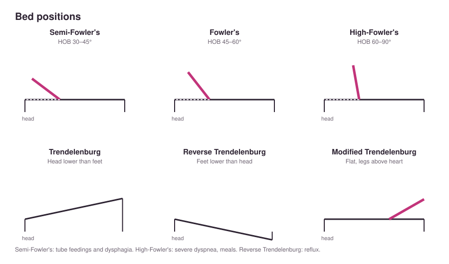
- Positioning aidsPillows, bath blankets, hand rolls, boots, splints, trochanter rolls
- Why reposition frequentlyPrevents discomfort, contractures, pressure injury, and nerve and circulatory damage